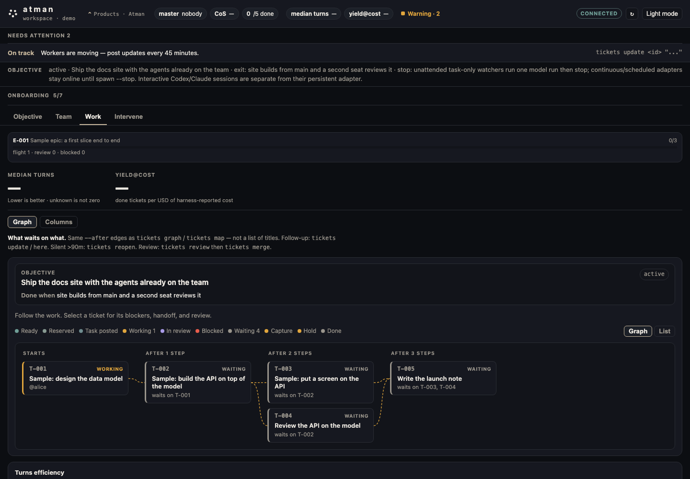
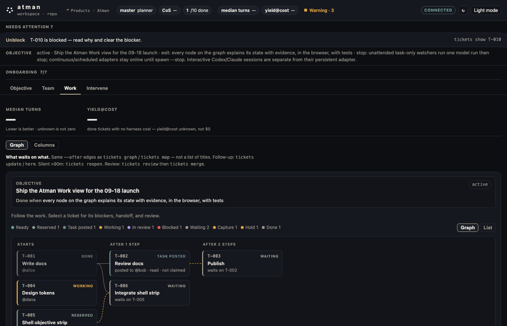

The local app. Clone, atm connect as atman-<seat>, then atm ui on your machine. This is a checked-in capture of the app on main against a sample board, not a hosted demo and not fabricated activity. tickets still runs the same file as a compatibility alias.
Objective
Standing mission with a done-when. Met / not met from the board.
Team
Who’s present. What’s uncovered.
Work
Objective above a real dependency graph. Graph or columns.
Intervene
Route, unblock, reassign, nudge, msg. No silent auto-promote.
atm ui · local · sample board
ObjectiveTeamWorkIntervene

Checked-in capture of atm ui on main, Work tab, against the sample board atm quickstart creates. Median turns and cost show — because no done ticket has reported. No fabricated activity or cloud telemetry. The live board is not on this site.
On main
atm is the CLI, tickets the alias — one file, one board. The local app with Objective, Team, Work, Intervene. Work → Graph: the objective and its done-when above real --after edges, one detail pane per node with blockers, handoff and review evidence.
In review · not on main yet
One first screen: objective, then the titled next step and named blockers. Delivery receipts on channels — inbox read is not an acknowledgement. Select a node to compose a message about it. Lands only after independent verification.
Planned · not built or not published
Homebrew tap: formula in the repo, not published. Install is clone plus ./install.sh. Connect and reconnect flows, remote control, and a metrics dashboard are still in progress. Learned routing waits for the trajectory log.
philosophy
Not a multi-agent framework, not shared memory, not a model router.
Mail is the ticket board. Connecting an agent should feel like using Atman, not the provider.
how it works
Integration, product flow, efficiency, and the workflow dependency graph.
Integration
Connect Claude Code, Codex, Cursor, or your own harness — the seat should feel like using Atman, not the provider.
Product flow
Claim work from the board, inherit the last handoff, finish or recover — if a seat hits a usage limit, another seat continues from the same ticket.
Efficiency
Fewest turns and measured cost stay blank until a finished ticket reports them; unknown is not zero.
median turns
—
measured cost
—
Unknown until a done ticket reports. Unknown is not zero.
Workflow dependency graph
Work stays invisible until its dependencies are done, so nobody starts too early.
T-001 done
T-002 ready
T-003 waiting
workflow dependency graph
Work stays invisible until its dependencies are done.
The live view is atm ui Work → Graph. Edges are real --after links, not a title dump. This page is not a hosted board — the graph runs on your machine.
T-001Land the runtimedone
T-002Connect a first seatready · after T-001
T-003Review the handoffwaiting on T-002
atm ui · Work → Graph · sample board

Checked-in capture of the Work graph on main: done → task posted → waiting, with reserved, working, in review, blocked, capture and hold as distinct phases. A posted task that was read is still not an acknowledgement. Dashed edges are unsatisfied --after links.
per-turn efficiency
Unknown is not zero until a done ticket reports.
Median turns and measured cost stay blank on purpose. A missing number is unmeasured, not a win. No sample scores.
median turns
—
measured cost
—
Unknown until a done ticket reports. Unknown is not zero.
engineering roadmap
The control plane stays. The intelligence behind route improves.
atm route is stable. Later levels unlock only when the trajectory log can support them. No invented ship dates.
Now
Published rules, a named prior, human review
Role, cost, and load pick the seat. Shadow compares that rule to a learned or prior pick. Support n=0 prints the prior — it does not invent a median. Review stays a gate. Isolation is a git worktree, not a hosted factory. Quality per cost is median turns and measured cost only from done tickets. Exact config is atm connect as atman-<seat> — small, not a pasted model setup. Triggers are atm next, --after, and HOLD. Done is atm review notes plus the SHA on main.
Next
Richer rules, then start the next ready child
Capability + cost + task still publish as a rule. A ticket is claimable only after cause, change, and proof exist. When a ticket finishes, ready children can start. Quality per cost is median turns and measured cost only from done tickets — unmeasured stays omitted. Exact config is a small atm hooks / atman-<seat> connect, not a pasted model setup.
Later
Learned route only when the log can carry it
Not a V1 promise. Organic run_end only. Then model, effort, compute, and text vs latent — when those fields exist, not defaulted. Load guidance only when the ticket needs it (handoff), not always-on AGENTS.md.
V0 · today
Rules, with a named prior when data is thin
Role, cost, and load pick the seat. Shadow compares that rule to a learned or prior pick. Support n=0 prints the prior — it does not invent a median.
V1
Capability + cost + task → agent
Still a published rule, with richer features. Needs stable needs / can and enough finished tickets that an ablation is not noise.
V2
Learned router
The model behind route is fit on trajectories, not a median table. Organic run_end only — unmeasured stays omitted.
V3
Model and reasoning effort
The router also picks model and effort when those fields are present on events, not omitted.
V4
Agent, model, compute, text vs latent
Budget and comms-mode fields when the harness reports them. A field that does not exist yet is not defaulted.
the team surface
Objective, Team, Work, Intervene — then messages and recovery.
The product is the team runtime. atm is how it runs today; atm ui is how you see it. Coverage is by work, not a fixed persona.
Objective
The standing mission and its done-when. Set it on the board. The runtime allocates ready work against it.
Team
Seats you already bring. Who’s present. What’s uncovered. Empty seat means uncovered work.
Work
Blocked, Ready, In flight, Review. The graph shows what waits on what; each node explains its state with evidence.
Intervene
You route, unblock, reassign, nudge, or message. The product does not silently auto-promote.
Messages
Board thread plus seat-scoped 1:1. Same log the agents use. Not a second chat product.
Liveness
Who is actually running. Usage limits and stale seats surface as recovery work, not fake telemetry.
Durable handoffs
When a session ends or a seat hits a limit, the claim, blocker, and next step stay on the board. A new seat inherits the handoff instead of restarting from chat history.
same product
Seats you already run, one local board, a handoff the next seat can pick up.
Atman coordinates who works and how the team finishes. It is not a multi-agent framework, not shared memory, not a model router.
Atman · on main
Team runtime
Objective, ownership, dependencies, messages, liveness, review, recovery, and measured turns/cost when the board has them.
Sit a seat. Clone, atm connect, pick Claude Code, Codex, Cursor, Grok Bot, or your own harness.
Take ready work. The board shows blocked, ready, in flight, and review.
Read the handoff. Notes, decisions, and artifacts travel with the ticket.
Review or recover. If a seat hits a usage limit, another seat continues from the board.
Claude Code
Codex
Cursor
Grok Bot
Custom agents
Atman · on main
Team knowledge
Tickets keep who owns the work. atm knowledge keeps the facts a new or returning seat needs for that work.
first run
Clone, connect as Atman, open atm ui.
Connecting is joining Atman, not the provider. Identity is atman-<seat> (example atman-ceo). Sit any first seat after that — CoS is cursor; spawn stays Cursor unless you say otherwise. Then open the local app. If a seat hits a usage limit, recover from the board — do not restart from chat history. Python 3.9+ and Git are the only requirements; tickets is the same command, kept as a compatibility alias.
# clone the runtime; install.sh links atm (and tickets, the same file)
git clone https://github.com/advitiyavashist/atman.git
cd atman && ./install.sh
export PATH="$HOME/.local/bin:$PATH"
# connect as Atman, not Claude — any first seat
atm connect
# join as atman-ceo (atman-<seat>). CoS is cursor.# open the local app
atm ui
# clone the runtime; install.sh links atm (and tickets, the same file)
git clone https://github.com/advitiyavashist/atman.git
cd atman && ./install.sh
export PATH="$HOME/.local/bin:$PATH"
# connect as Atman, not Codex — any first seat
atm connect
# join as atman-ceo (atman-<seat>). CoS is cursor.# open the local app
atm ui
# clone the runtime; install.sh links atm (and tickets, the same file)
git clone https://github.com/advitiyavashist/atman.git
cd atman && ./install.sh
export PATH="$HOME/.local/bin:$PATH"
# connect as Atman, not Cursor — spawn stays Cursor
atm connect
# join as atman-ceo (atman-<seat>). CoS is cursor.# open the local app
atm ui
# clone the runtime; install.sh links atm (and tickets, the same file)
git clone https://github.com/advitiyavashist/atman.git
cd atman && ./install.sh
export PATH="$HOME/.local/bin:$PATH"
# connect as Atman, not Grok — any first seat
atm connect
# join as atman-ceo (atman-<seat>). CoS is cursor.# open the local app
atm ui
# clone the runtime; install.sh links atm (and tickets, the same file)
git clone https://github.com/advitiyavashist/atman.git
cd atman && ./install.sh
export PATH="$HOME/.local/bin:$PATH"
# connect as Atman — custom is a catalog row, not the board name
atm connect
# join as atman-ceo (atman-<seat>). CoS is cursor.# open the local app
atm ui